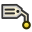

 Draft Label |
| Menu location |
|---|
| Draft → Label |
| Workbenches |
| Draft, Arch |
| Default shortcut |
| D L |
| See also |
| None |
{kind=link}
Description
This tool inserts a label, which is a piece of text with a 2-segment line and an arrow, in the active document. If an object or a sub-element (face, edge or vertex) is selected when starting the command, the Label can be made to automatically display a certain attribute of the selected element.
{kind=link}
How to use
- Optionally, select an object or a subelement of an object (Vertex, edge or face)
- Press the
 Draft Label button, or press D then L keys
Draft Label button, or press D then L keys - Click a first point on the 3D view, or type a coordinate, to indicate the target point (arrow position). This can be anywhere, it doesn't need to be exactly on the selected element
- Click a second point on the 3D view, or type a coordinate, to indicate the middle point that is the start of the straight segment.
- Click a third point on the 3D view, or type a coordinate, to indicate the position of the text.
Options
- Pressing CTRL will snap your point to available snap locations.
- To enter coordinates manually, simply enter the numbers, then press ENTER between each X, Y and Z component.
- Pressing ESC will cancel the operation.
- The direction of the straight segment (right or left) will automatically justify the text left or right.
Properties
- DATALabel Type: The type of information shown by this label (see below)
- DATACustom Text: The text to display when Label Type is set to custom
- DATAPlacement: Indicates the rotation and the position of the text
- DATAStraight Distance: The length of the straight segment
- DATAStraight Direction: The direction of the straight segment Horizontal or vertical
- DATATarget Point: The point indicated by this label
- VIEWText Size: The size of the text
- VIEWText Font: The font used for the text
- VIEWText Alignment: The vertical alignment of the text: Top, middle or bottom
- VIEWText Color: The color of the text
- VIEWLine Width: The width of the line
- VIEWLine Color: The color of the line
- VIEWArrow Type: The type of the arrow: Dot, circle, arrow or tick.
- VIEWArrow Size: The size of the arrow
- VIEWFrame: Draws a frame around the text
Label types
- Custom: Shows the contents of the Custom Text property
- Name: Shows the name of the target object
- Label: Shows the label of the target object
- Position: Shows the coordinates of the target object (Placement base point), or the coordinates of the target vertex, if applicable, or the coordinates of the center of the target subelement (center of mass)
- Length: Shows the length of the target subelement, if possible
- Area: Shows the area of the target subelement, if possible
- Volume: Shows the volume of the target object, if possible
- Tag: Shows the tag value of the target object, if the target object has such property (which is the case of all Arch objects)
- Material: Shows the label of the material of the target object, if the target object has such property
Scripting
The Text tool can by used in macros and from the python console by using the following function:
makeLabel(targetpoint=None,target=None,direction=None,distance=None,labeltype=None,placement=None)
- Returns the newly created object.
Example:
import FreeCAD,Draft selection = FreeCADGui.Selection.getSelectionEx()[0] Draft.makeLabel(FreeCAD.Vector(10,-10,0),selection,"Horizontal",20,"Label")